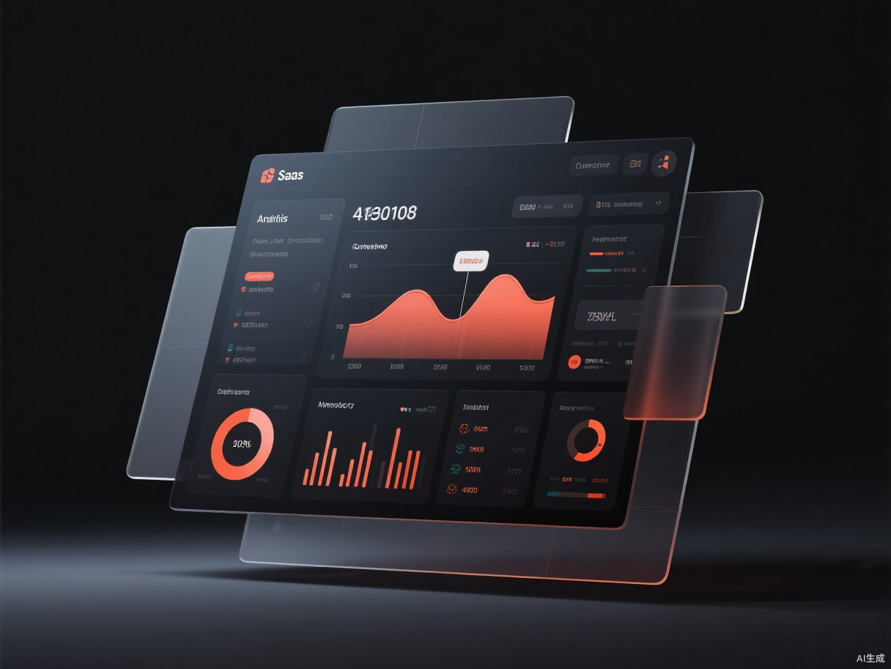
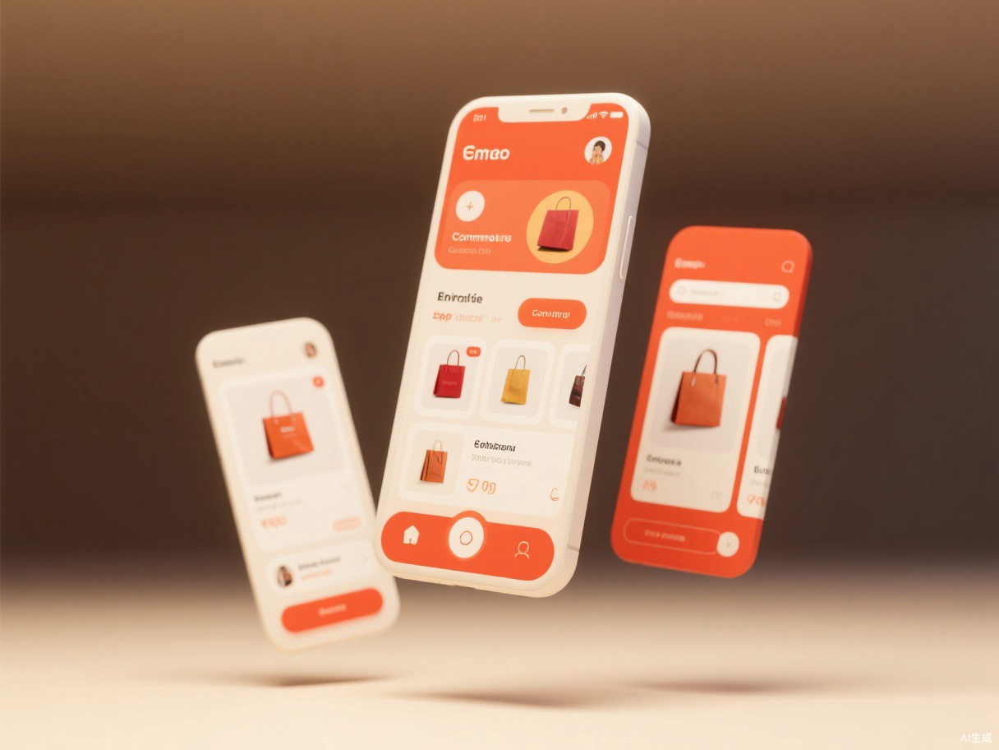
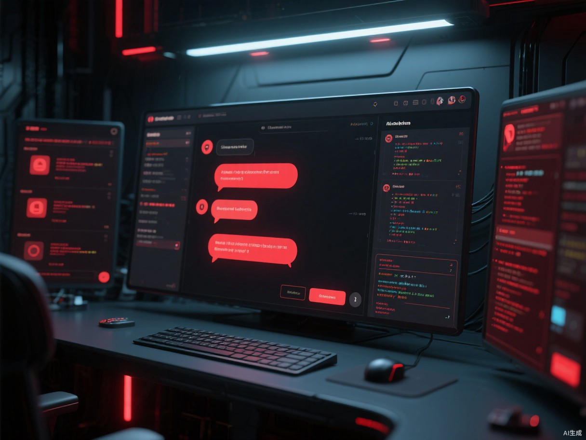
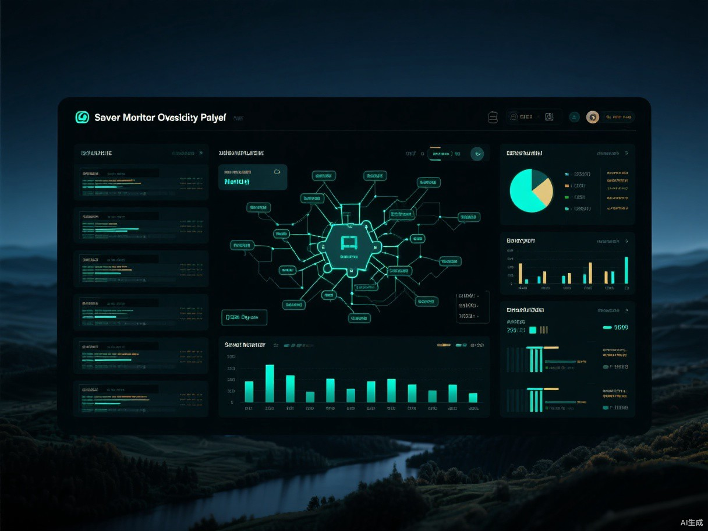

前端FRONTEND
像素级还原，60fps 动效洁癖，让界面「长出性格」。
你好，我是 LAIMAO。一名把「完整交付」当作信仰的全站开发工程师 —— 从第一像素到最后一行部署脚本，整条产品链路我都亲手负责。
白天写 Vue 与 React，把界面打磨到像素级；晚上写 Node 与 Go， 让接口在高压下依然优雅；顺手把 Docker、CI/CD 和监控告警收拾得服服帖帖。 我相信好的工程是设计与逻辑的双向奔赴—— 界面有性格，代码有温度。
如果你的产品需要一个「既能画稿子、又能扛住双十一」的人， 那我们大概率聊得来。
像素级还原，60fps 动效洁癖，让界面「长出性格」。
高并发不慌，烂代码不留。API 设计是我的第二母语。
会写索引，更会「不写查询」。让数据安安静静地快。
一条流水线交付到底：构建、部署、监控、告警全自动。

B 端数据可视化中台，50+ 图表组件，首屏渲染压进 1s。

电商小程序全栈方案，秒杀场景扛住 10w+ QPS。

LLM 驱动的效率工具，流式对话 + RAG 知识库 + 插件生态。

日志、指标、链路三位一体，故障定位从小时级到分钟级。
把你的想法拆成清晰的功能地图，砍掉伪需求，留下真价值。
界面原型 + 技术选型一次到位，交互与架构同频共振。
周更可点版本，进度透明；每一行提交都有据可查。
自动化部署 + 监控告警，交付的不是代码，是安心的产品。
有项目想聊聊？